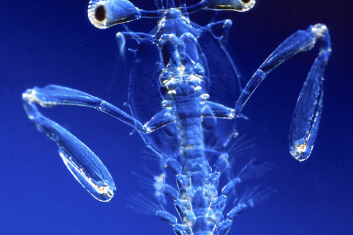

Superpoder
Possuem a visão mais complexa já evoluída no mundo animal. Por exemplo, cada olho do mantis se move de forma
independente do outro. Além disso, eles podem detectar luz visível, ultravioleta e polarizada, enxergar em 3D e até ver
câncer. Fonte!

Sem luvas
Conhecidos pelo segundo toracópode modificado em garra raptorial, capaz de golpear e quebrar conchas de moluscos, e
capturar suas presas. Podem ser separados em dois grupos de acordo com a morfologia das garras: o grupo esmagador, que desfere golpes em sua
presa similares a socos de alta potência, e o outro grupo, perfurador, que perfura a presa com as projeções pontiagudas
localizadas no dáctilo, último segmento da garra. Existem frequentes relatos anedóticos sobre acidentes em humanos
causados por esses crustáceos, mas as informações são imprecisas e muitas vezes o animal não é corretamente identificado
pelas vítimas. Fonte!

Peso pena
Além da enorme potência de seu soco, esse animal consegue movimentar seus apêndices tal qual um tiro de arma de fogo:
seu golpe pode chegar a uma velocidade 720 km/h. Curiosamente, tanto a força quanto rapidez do ataque, não danificam sua
estrutura corporal. Fonte!